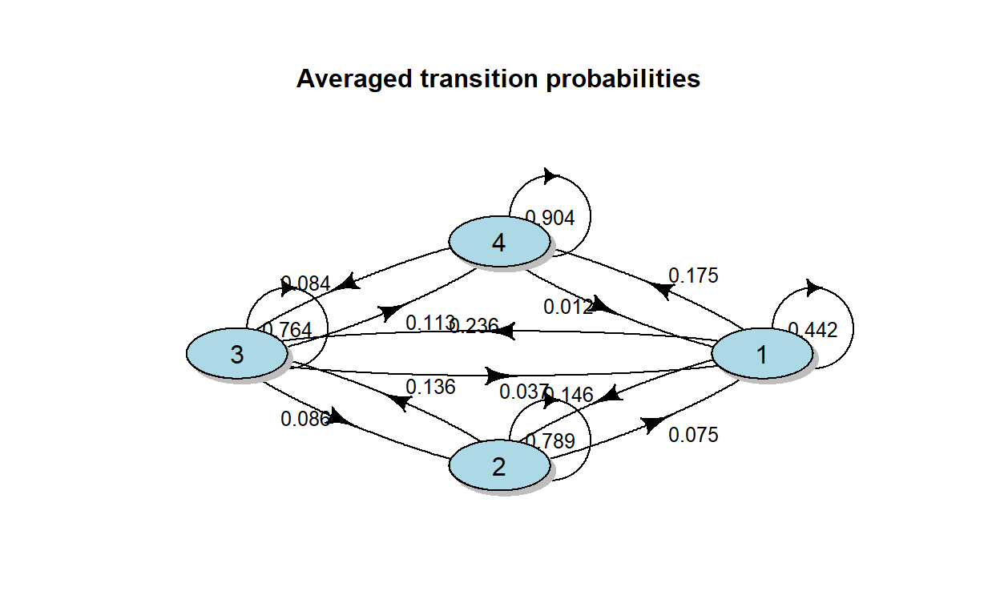

In this post we will apply Latent Markov Models to model the customers portfolio composition of a retailer. To fit the models we will use the R package LMest.
Market or customer segmentation refers to the division of customers or potential customers of a given market into homogeneous groups. The idea is that customers belonging to the same group will common characteristics and their response to marketing activities and initiatives will be almost the same. Customer segmentation can be performed in different ways, for example a very basic method is to divide customers into groups on the basis of they spending, LTV or number of visits to a store. Where in the first two cases the aim is to identify groups of customers with different profitability and target them with different campaigns, discounts or promotions.
In practice other variables than the number of visits or the spending are taken into account, for example socio-economic variables are often included as it is well known that factors such as age, lifestyle and status have a great impact on the customer behavior. Despite the number of groups in which we want to segment our customers is often known a priori it might happen that there exists hidden partitions that we ignore. In this case statistical techniques can be adopted to decide the number of groups that achieve the best homogeneity between members.
Once customers are aggregated into different groups the interest might be in monitoring the evolution of these groups over time. For example having collected a sample of customers and having divided them into four groups according to their spending the company would like to know:
To answer these kind of questions we will propose an approach based on Latent Markov Models. In the following we will review the theory behind Latent Markov models subsequently apply them to model the customer spending dynamics
In this section we apply LMM to model the
The dataset that we consider is The Complete Journey dataset freely available from Dunn Humby. According to the description of the data provider the dataset contains household level transactions over two years from a group of 2,500 households who are frequent shoppers at a retailer. It contains all of each household’s purchases, not just those from a limited number of categories. For certain households, demographic information as well as direct marketing contact history are included.
We start by importing the data into R into two data.frame the demo which contains the demographical information of the customers and the transactions which contains the transactions performed by every customer in the retail in the last two years. We use janitor to clean and standardize the name of the columns.
Since we are dealing with temporal data the most natural thing is to retain the information provided by the time dimension and apply a longitudinal Latent Markov Model. Therefore We proceed by constructing a panel. To do so we divide the data into quarters each one composed of 120 days for a total of four quarters per year.
# build the variable indicating the quarter
quarter <- rep(seq(1:8), each = 120)
day <- seq(1:length(quarter))
time_quarter <- data.frame(quarter,day)
# assign the transactions to the corresponding quarter by joining on the day
adjust_transactions <- transactions %>% left_join(time_quarter, by = c("day" = "day"))
Next for each customer we obtain the total spending per quarter which will be used to score the customer profitability
In order assign a score to every customer we compare total spending in each quarter with the quartile of the quarterly total spending distribution. Next, we assign a score \(S\) between 1 and 4, where the two extreme values denote respectively low spenders and high spender customers. In particular we have
whit score function \[ \begin{aligned} S = \begin{cases} & 1 \quad \text{if}, \; I(spending_{iq} \leq Q_{1}(spending_{q})) = 1 \\ & 2 \quad \text{if}, \; I(Q_{1}(spending_{q}) < spending_{iq} \leq Q_{2}(spending_{q})) = 1 \\ & 3 \quad \text{if}, \; I(Q_{2}(spending_{q}) < spending_{iq} \leq Q_{3}(spending_{q})) = 1 \\ & 4 \quad \text{if}, \; I(spending_{iq} > Q_{3}(spending_{q})) = 1 \end{cases} \end{aligned} \]
where \(spending_{iq}\) denotes the spending of the \(i\)th customer in quarter \(q\), \(Q_{j}(spending_{q})\) denote the \(j\)th quartile of the spending distribution in quarter \(q\) and \(I(\cdot)\) is the indicator function which results. The next chunk of code compute the quartiles and assign the scores to each customer.
# compute quartiles
quantiles <- customer_quarter %>%
group_by(quarter) %>%
summarise(q1 = quantile(tot_spend,0.25),
q2 = quantile(tot_spend,0.5),
q3 = quantile(tot_spend,0.75))
# assign score to each customer
# in this loop scores are assigned to each customer for each quarter
s <- c()
k <- c()
q <- c()
score <- s
key <- k
quarter <- q
for(j in seq(1:6)){
ll <- customer_quarter %>% filter(quarter == j)
qq <- quantiles %>% filter(quarter == j)
for(i in 1:nrow(ll)){
k[i] <- ll$household_key[i]
q[i] <- j
if(ll$tot_spend[i] <= qq[2]){
s[i] <- 1
}else if(ll$tot_spend[i] > qq[2] & ll$tot_spend[i] <= qq[3]){
s[i] <- 2
}else if(ll$tot_spend[i] > qq[3] & ll$tot_spend[i] <= qq[4]){
s[i] <- 3}
else if(ll$tot_spend[i] > qq[4]) {s[i] <- 4}
}
quarter <- c(quarter,q)
score <- c(score,s)
key <- c(key,k)
}
# obtain the scores given to the customers over the different quarters
quarter_scores <- data.frame(household_key = key, score, quarter)
# bind scores to the customers spend
customer_quarter <- customer_quarter %>%
left_join(quarter_scores, by = c("household_key" = "household_key", "quarter" = "quarter")) %>%
dplyr::select(-c("tot_spend")) %>% data.frame()
Having assigned the score to each customer we proceed to join the results with the socio-economic variables and prepare the data for model fitting. In particular we remove the observations with missing data, convert the variables to factors and consider only the customers that performed a purchase at least once every quarter. This last adjustment is performed in order to have a balanced panel.
# bind demographic info and remove customers with missing values
data_fit <- customer_quarter %>%
# join tables
left_join(demo, by = c("household_key")) %>%
# remove households with missing values
drop_na()
# rename variables for model fitting
c_name <- colnames(data_fit)
nc <- ncol(data_fit)
c_name[3] <- paste("Y",sep ="",colnames(data_fit)[3])
c_name[4:nc] <- paste(paste("X",seq(1:(nc-3)),sep=""),colnames(data_fit)[4:nc],sep = "")
colnames(data_fit) <- c_name
# convert explanatory variables into factors
response <- colnames(data_fit)[4:nc]
data_fit[response] <- lapply(data_fit[response], factor)
# extract customers which have at least one expense in each quarter
idx = data_fit %>% group_by(household_key) %>%
# obtain number of quarters per household
summarise(n = n()) %>% ungroup() %>%
# filter out households
filter(n==6) %>%
# select hoousehold key and transform it to a vector
dplyr::select(household_key) %>% as.vector()
data_fit <- data_fit %>% filter(household_key %in% idx$household_key)
After the cleaning the data comprises 801 customers each of them observed for one quarter.
In order to fit the LMM model we will use the LMest ([LMest]) package, developed by F. Bartolucci, F. Pennoni and .
We will consider two models:
\(\mathcal{M}_{1}\): time heterogeneous LMM with no covariates. In this case no explanatory variables are included in the model but the transition probabilities are allowed to vary in time
\(\mathcal{M}_{2}\): time heterogeneous LMM with covariates. This is an extension of model \(\mathcal{M}_{2}\) where we include socio-economic descriptors are covariates
Despite it is possible to add covariates both in the equation which scribe the evolution of the latent state and in the equation which describe the evolution of the observed series this discouraged as suggested by (Bartolucci, Farcomeni, and Pennoni 2012). The main reasons are that the resulting model might be too complex to interpret and that the number of parameters might increase too much leading to unreliable estimates in the optimization process.
We proceed do define the formulas for every model and to fit them
We start by considering the BIC, AIC for M1 and M2
| model | aic | bic |
|---|---|---|
| M1 | 8275.910 | 8400.253 |
| M2 | 8304.931 | 8525.985 |
We start by comparing the prior probabilities obtained by the two models without covariates. Prior probabilities represents the probability that a customer belongs to a certain class.
| model | low spender | middle-low spender | middle-high spender | high spender |
|---|---|---|---|---|
| M1 | 0.4390471 | 0.006717 | 0.1584249 | 0.3958109 |
| M2 | 0.4390471 | 0.006717 | 0.1584249 | 0.3958109 |
The prior probabilities estimated using from the two models appears pretty different. According to M1 the probability of a customer to belong to the low spenders group is almost 43%, while according to M2 this probability is only 26%. Conversely M2 shows an increase in the estimated prior probabilities associate to the middle-low spender and middle-high spenders groups, nevertheless the prior probability estimated by the two models for the high spender group is almost the same around 40%. To understand the dynamics of the customer segments we can analyze the transition probabilities estimated by the two models.

The plots represent the Markov diagram and the associated transition probabilities. As model M2 allows for time varying probabilities, the diagram shows the averaged transition probabilities over the 6 quarters. We will focus on the interpretation of the plot describing the M2 dynamics. From the diagram it is evident that high spender customers have the highest probability of remaining in their actual state over the next 4 months. This is a really positive news for the company as it might represent the fact that the company is retaining is high segment properly. The same also holds for middle-high spenders that have an estimated probability of 70% of remaining in the state. However, in this case there in an average estimated probability of 14% that a middle-spender customer will become a middle-low spender over the next quarter. Moreover, the estimated probability of a low spender to increase his spending and become a middle spender is 17% which is really positive since once a customer becomes a middle-low spender the probability of subsequently to state 3 and increase further his spending is equal to 20%.
The dynamics of the customers between the different ghroups can be investingated by looking ad the marginal distributions over time.
Figure 1: Marginal distributions
Fig 1 shows the distribution of the states over time. The high spenders segment shows the highest stability over the 6 quarters. The low spenders segment show a steady decline between the first and the second quarter with an increase in the number of subjects belonging to the middle groups. there is an increase in the number of customers belonging to the middle spenders groups with a slight decline between the fifth and sixth quarter.
We conclude the analysis discussing the panel Latent Markov model fitted including the explanatory variables.
Bartolucci, Francesco, Alessio Farcomeni, and Fulvia Pennoni. 2010. “An Overview of Latent Markov Models for Longitudinal Categorical Data.” arXiv Preprint arXiv:1003.2804.
———. 2012. Latent Markov Models for Longitudinal Data. CRC Press.
Bartolucci, Francesco, Silvia Pandolfi, and Fulvia Pennoni. 2017. “LMest: An R Package for Latent Markov Models for Longitudinal Categorical Data.” Journal of Statistical Software 81 (4): 1–38. https://doi.org/10.18637/jss.v081.i04.
Woodside, Arch G., and Randolph J. Trappey. 1996. “Customer Portfolio Analysis Among Competing Retail Stores.” Journal of Business Research 35 (3): 189–200. https://doi.org/https://doi.org/10.1016/0148-2963(95)00124-7.